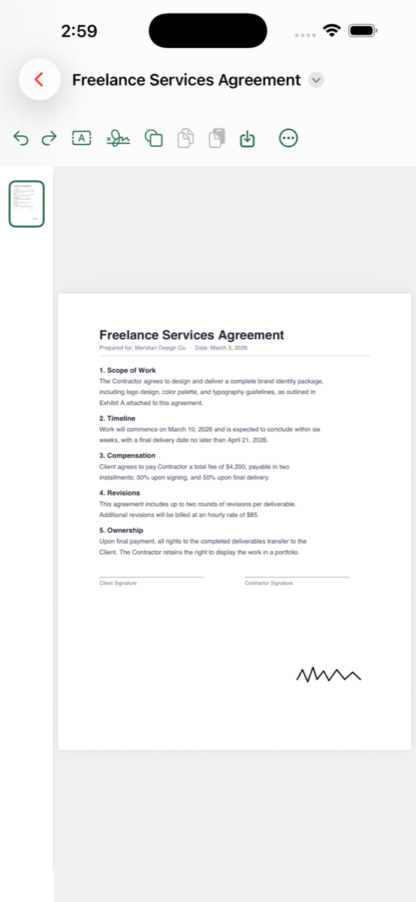
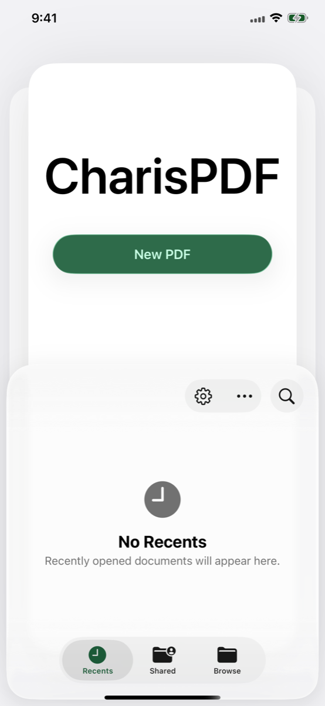
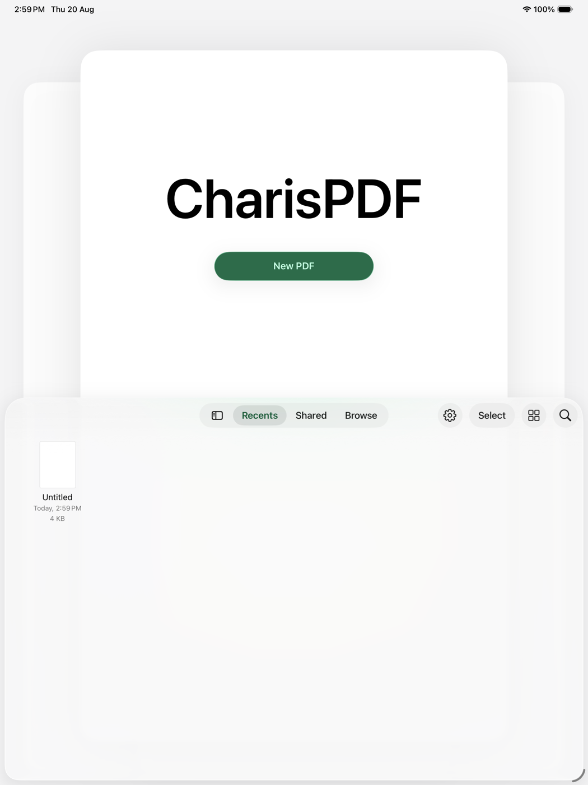

Charis — Greek for grace
Free. No account. No watermark. Sign, mark up, and organize PDFs entirely on your iPhone or iPad — nothing you didn't add is ever rewritten, and nothing leaves your device.
The idea
Point at existing text to fix a typo and the whole line reflows. Sign a form and a watermark shows up anyway. CharisPDF adds your marks on top of the page and leaves everything else exactly as it was.
Text, shapes, and signatures land on the page as objects you can still select later — move, resize, restyle, or delete them. The original content stream is never touched.
No account, no upload, no analytics. A file only ever leaves your device if you choose to connect your own AI agent for something extra.
App Intents and Shortcuts let your own AI agent search, count, rotate, or edit pages. CharisPDF supplies the tools — you keep the file.
What's in it
Why not just use another paid PDF tool?
| Area | Other paid PDF tools | CharisPDF |
|---|---|---|
| Editing existing text | Often rewrites the underlying text layer | We don't touch it — added marks stay separate objects |
| Cost | Subscription or per-feature paywall | Free. No subscription, no paywall on editing |
| Account | Usually requires sign-in | No account, ever |
| Where files go | Cloud processing common for AI features | Local by default. Agent calls are opt-in, to your own endpoint |
| AI | Built-in copilot, their cloud | Plug in the agent you already use — we don't sell AI |
See it
Captured from the simulator — the same local editor you get on the App Store. No account wall in these shots, because there isn’t one.



User guide
CharisPDF only adds marks on top of your PDF. It does not rewrite the original page content, and it does not require a sign-in.
Launch CharisPDF → tap a recent file, use Browse, or open a PDF from Files / Mail / another app with Share → CharisPDF. Or tap New PDF for a blank page.
In the editor toolbar, choose the signature tool. Draw it, type it, or use a photo. Place it where you need it — you can move, resize, or delete it later.
Add text boxes and shapes as overlays. Highlight, underline, or strike through existing text without changing the underlying page stream.
Reorder, rotate, insert, delete, extract, or duplicate pages when you need a cleaner packet — still on device.
Save back to Files (or Save a Copy). Undo/redo goes all the way back. Works offline; dark mode supported.
Privacy: CharisPDF collects no analytics and does not upload your files. The App Store privacy label is Data Not Collected. Optional agent / Shortcuts hooks are opt-in and only leave your device if you send a file to an endpoint you choose.
The name
The product promise follows from the name: put your marks on the file you have, and leave the original page content alone. Not a rewrite, not a redo — just what you added.